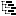

Le panel de droite liste les objets existants et les attributs des objets.
Ajoutez des relations au 'Tree Walkers' en glissant les attributs dans le 'Tree Walkers'.
Créez un nouveau 'Tree Walkers' en utilisant le bouton droit de la souris sur un Package.
| Légende | |
| Package | |
|  | Tree Walker |
| Relation | |
| Objet | |
| Attribut | |